Markov Random Field and application on fMRI Connectivity Analysis
Wei Liu
weiliu@sci.utah.edu
Goal: Compute the 'connectivity' between any pair of voxels (or regions) in brain cortex. (the rigid definition of 'connectivity' is not available.)
information available:
- Data. fMRI (time courses), DTI(tractography)
- Assumption: Connectivity should be smoothly changed.
Method: Bayesian Rule:
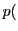connectivity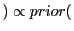connectivity likelihood likelihood |
(1) |
Prior: 1) from neighbors connectivity. 2) from other voxels with DTI tract.
likelihood: from data.
1) From neighbors connectivity.
Figure 1:
Without data, the connectivity value at a point depends on its neighbors.
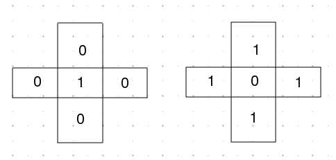
|
Figure 2:
Connectivity between any voxel pairs of two 1-D image.
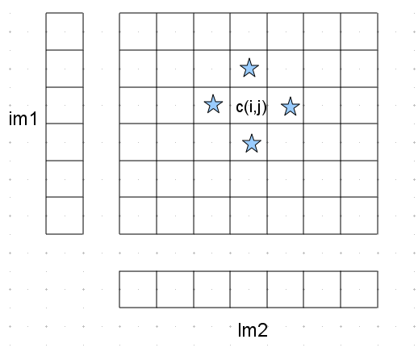
|
Figure:
Connectivity between any voxel pairs of two 1-D image, with DTI tract.
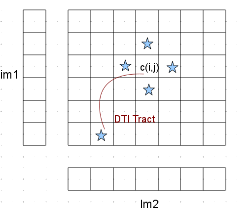
|
Figure:
synthetic image
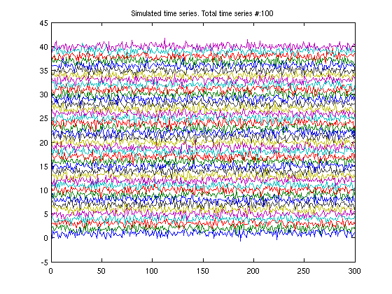
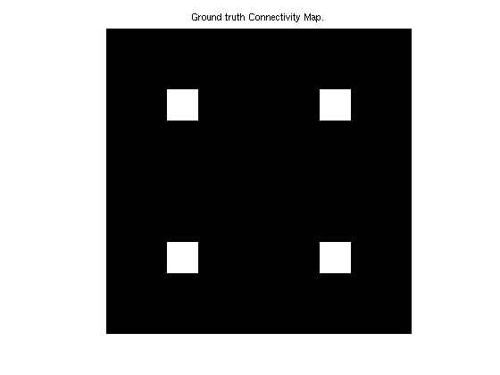
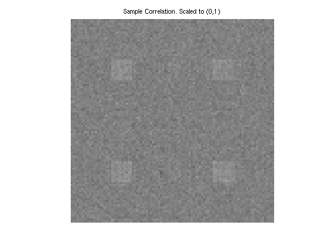
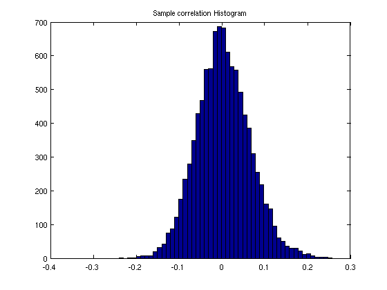
|
Figure 5:
Use Markov Random Field to estimate connectivity.
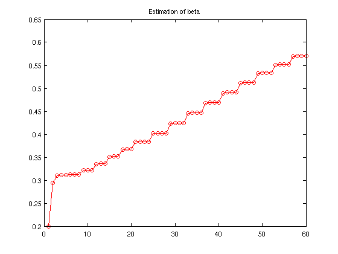
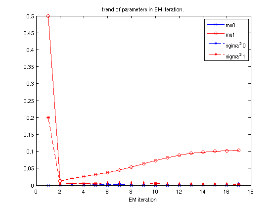
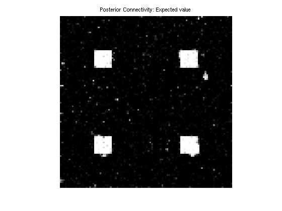
|
A dynamic plot can be found here: http://www.sci.utah.edu/~weiliu/research/intro/postConn.gif
What questions can we answer:
-
Satoru Hayasaka and Paul J. Laurienti.
- Comparison of characteristics between region-and voxel-based network
analyses in resting-state fMRI data.
NeuroImage, 50 (2): 499-508, April 2010.
ISSN 1053-8119.
doi: rm10.1016/j.neuroimage.2009.12.051.
URL
http://www.sciencedirect.com/science/article/B6WNP-4Y05DJ6-D/2/64b68c47b7e27b59d8e2d69a56151f2f.
Wei Liu
2010-02-17
{kind=link}